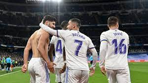

فوز مهم وصعب على غرناطه
بعد الخسارة ضد اثليتك بلباو في كأس الملك الأسباني
تلقى انشيلوتي هجوم حاد من الجماهير المدريدية والصحافة لتأخره بعمل التبديلات و اختياره للعب بمهاجم وهمي كذلك اختياره السيء للاعبين خط الهجوم
ليبدأ مباراة غرناطه بنفس الأسلوب ونفس التشكيلة
في حراسة المرمى كورتوا
في الدفاع مارسيلو ميليتاو ديفيد الابا و كارفخال
في الوسط توني كروس كامافينجا و مودريتش
في الهجوم رودريغو ايسكو و ماركو اسينسيو
فاز ريال مدريد بصعوبة بالغه ضد غرناطه و اتى الفوز بأقدام اسينسيو وبتسديدة رائعه من خارج منطقة الجزاء في الدقيقه 74
رغم الفوز لم تهدأ الانتقادات حول انشيلوتي بسبب المستوى السيء الذي قدمه ضد غرناطه وبلباو وكذلك التحضير السيئ للمباراة
فوز ريال مدريد كان مهم جدا لتوسيع الفارق مع الوصيف اشبيلية الذي تعادل في نفس الجوله ليصبح الفارق 6 نقاط بينهم